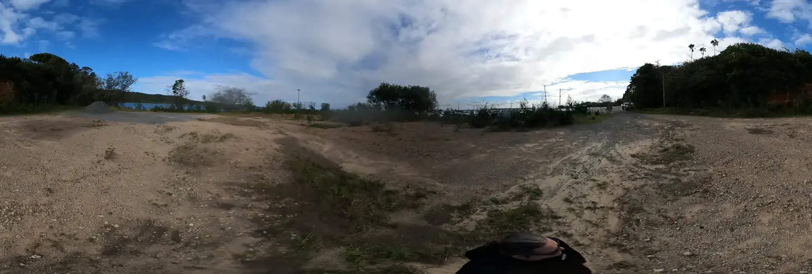

Battery commons
Where could shared storage reduce waste?
Could Dunwich, Amity, Point Lookout, the ferry gateway or a public building store rooftop solar close to the loads that use it later?
Could local solar be worth more when it is shared, stored, shifted into EVs or settled through a plain community ledger before it leaves the island cheaply?
Feed-in tariff question
A feed-in tariff is the rate paid for extra solar exported to the grid. The deeper Straddie question is whether midday power can do more local work first: heat water, chill food, charge EVs, run workshops, fill neighbourhood batteries or support emergency loads.
Use first. What loads can shift into sunny hours without making life harder?
Store second. Which homes, shops, clubs or service nodes need a shared battery, hot-water bank, sand heat store or EV charging window?
Settle plainly. Can savings be shown as bill credits, co-op accounts, vouchers or public receipts alongside any token idea?
Neighbourhood storage
Neighbourhood batteries are only one possible storage layer. A local stack could include home batteries, shared network batteries, sand heat, hot water, cool rooms, EV batteries and smart loads, each doing the job it is actually good at.
Battery commons
Could Dunwich, Amity, Point Lookout, the ferry gateway or a public building store rooftop solar close to the loads that use it later?
Sand heat node
Could a small thermal store support hot water, drying, cooking, workshop heat or emergency comfort before pretending to be an electric battery?
EV sink
Could island EVs, e-bikes, service vehicles and visitor chargers soak up midday solar while keeping chargers fair, visible and not grid-stressing?
Cold and water
Could fridges, cool rooms, pumps, laundry, desalination research, water heating and workshop machines move into the cheap sunny window?
Transport web
The ferry terminal upgrade makes the gateway a real transport planning node. EV charging, e-shuttles, service vehicles, green-hydrogen fuel questions and future Sandworm-style tunnel ideas can be explored as load-shifting, service and movement questions.

Plain ledger
A ledger could start as simple accounting: who generated, who stored, who used, who paid, who received a credit, and who opted out. A token or crypto layer can sit beside plain rules, consumer rights, cyber security and a human-readable fallback.
Plain bill
If exported solar earns only a small credit, could it be better to offset a neighbour's load, charge a local EV, run a cold room, heat water or build a mutual reserve?
Fair go
Could every household see the rules, join voluntarily, leave easily, protect private load data and find a help path when circumstances change?
Retail path
Is this a retailer product, embedded network, VPP, community battery subscription, co-op service, grant-funded pilot or only a research note?